Allen's WW2 service medals, and his later recognition as a sixty-year member of American Legion Post 286, Cressona, Pennsylvania — the same post whose cap he wears throughout the 2006 interview. His discharge papers cite the Good Conduct Medal (General Order 3, Headquarters 3d Attack Group, August 2, 1943) and the Distinguished Unit Badge (General Order 3, Headquarters 3d Attack Group, March 25, 1944) — see his full discharge record in the Military Record section.
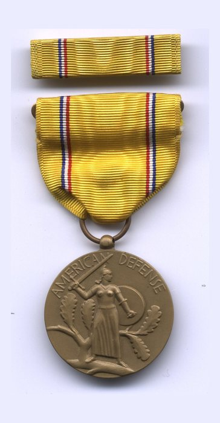
American Defense Service Medal
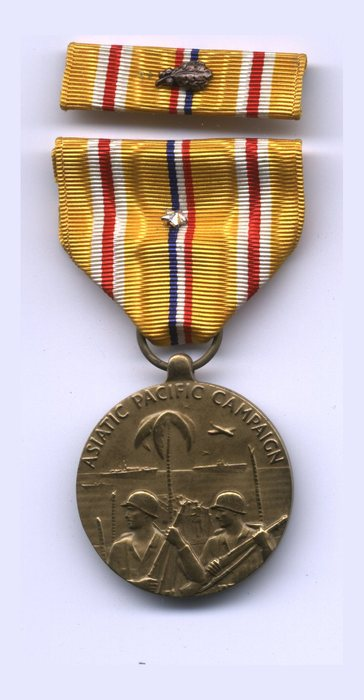
Asiatic-Pacific Campaign Medal, with battle star
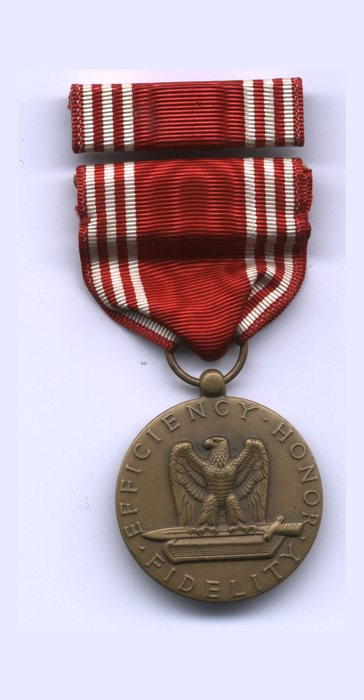
Good Conduct Medal
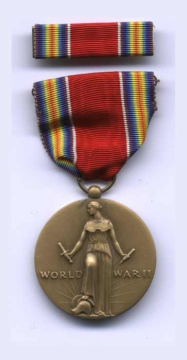
World War II Victory Medal
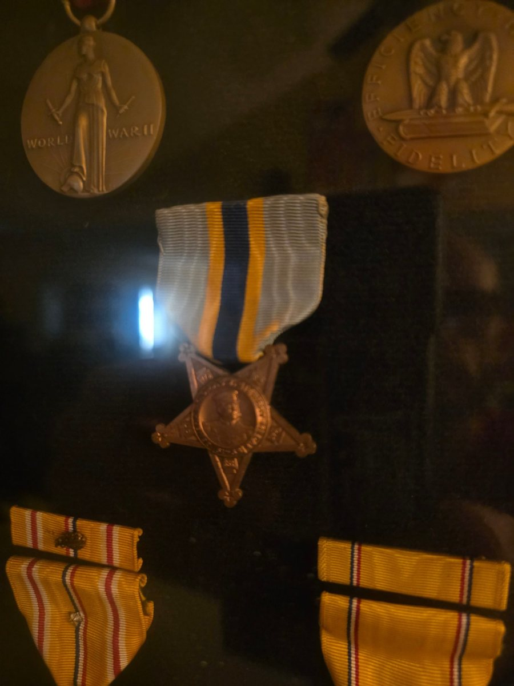
His medals as mounted and kept by the family: the World War II Victory Medal (top left) and the reverse of the Good Conduct Medal (top right, “Efficiency, Honor, Fidelity”), a five-pointed star service medal, and two ribbon bars.
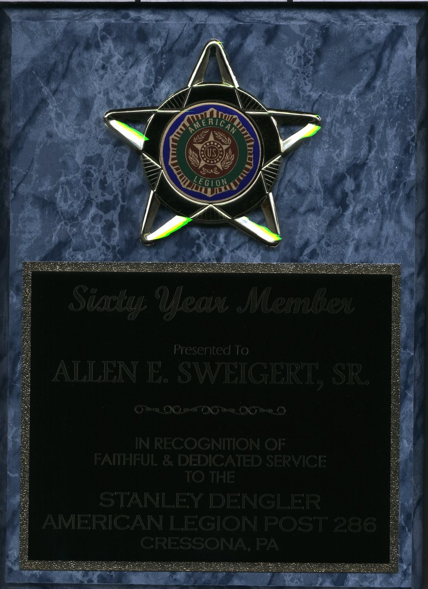
Sixty-Year Member, American Legion Post 286, Cressona, Pennsylvania — presented to Allen E. Sweigert, Sr.
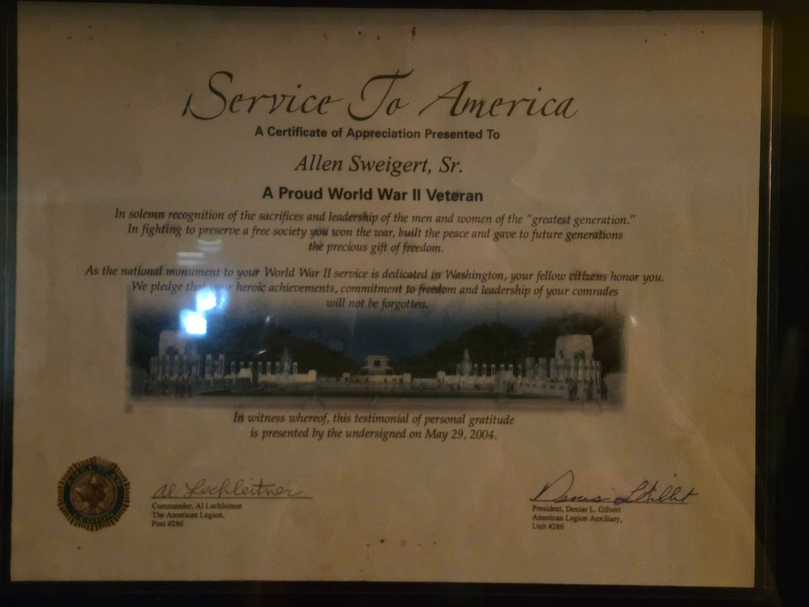
A “Service to America” certificate of appreciation from American Legion Post 286 and its Auxiliary Unit 286, presented May 29, 2004, marking the dedication of the National World War II Memorial in Washington, D.C.
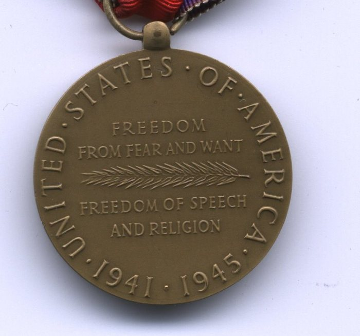
The reverse of a bronze medal: “UNITED . STATES . OF . AMERICA” arcs around the rim with the dates “. 1941 . 1945 .” completing the circle along the bottom. In the centre, “FREEDOM FROM FEAR AND WANT” is lettered above a laurel spray and “FREEDOM OF SPEECH AND RELIGION” below it. The broad red centre of the ribbon, with one rainbow-striped edge, is folded through the suspension ring at the top.
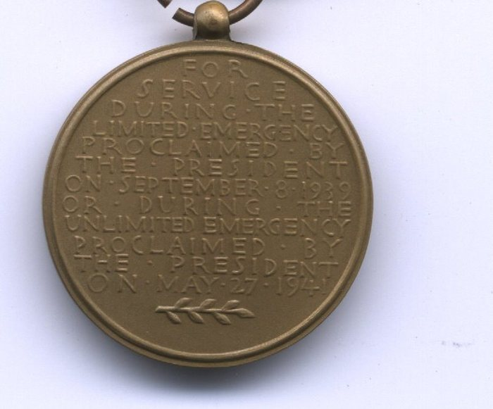
The reverse of a bronze service medal, its raised lettering reading “FOR SERVICE DURING THE LIMITED EMERGENCY PROCLAIMED BY THE PRESIDENT ON SEPTEMBER 8 1939 OR DURING THE UNLIMITED EMERGENCY PROCLAIMED BY THE PRESIDENT ON MAY 27 1941”, with a small laurel spray struck beneath the last line. The suspension ring shows at the top edge of the frame.
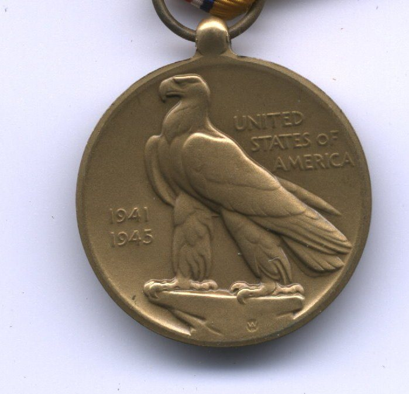
The reverse of a bronze campaign medal: a bald eagle in high relief facing left, “UNITED STATES OF AMERICA” lettered in three lines to the right of it and the dates “1941” and “1945” to the left. A small “W” is struck into the field below the eagle’s feet, and a striped ribbon shows through the suspension ring at the top.
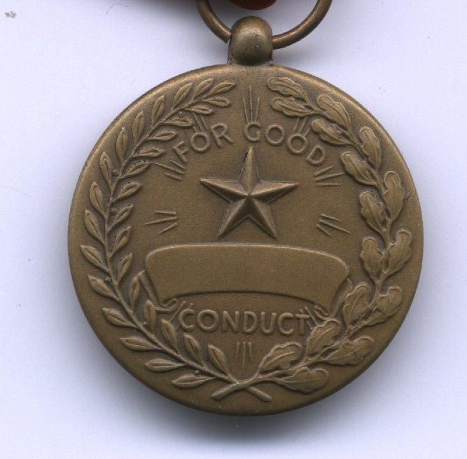
The reverse of a bronze medal, a wreath of laurel and oak encircling a five-pointed star above a scroll, with “FOR GOOD” lettered above the star and “CONDUCT” below the scroll. The scroll, which was meant to carry the recipient’s name, is blank.
His Insignia
Branch and unit insignia from his own collection: U.S. and Army Air Forces collar discs; the 213th Coast Artillery Regiment's crest, motto “Non Solum Armis” (“Not by Arms Alone”); and the “First Defenders” crest of the same regiment's Schuylkill County lineage. Below, two marksmanship qualification badges, bars reading “Coast Arty” and “Pistol D.”
Collar and unit insignia, and marksmanship qualification badges, from Allen's own collection.
An Officer He Photographed
Not one of Allen’s own decorations, but a record worth setting beside them: the man whose field modification rebuilt the aeroplanes Allen kept the radios in.
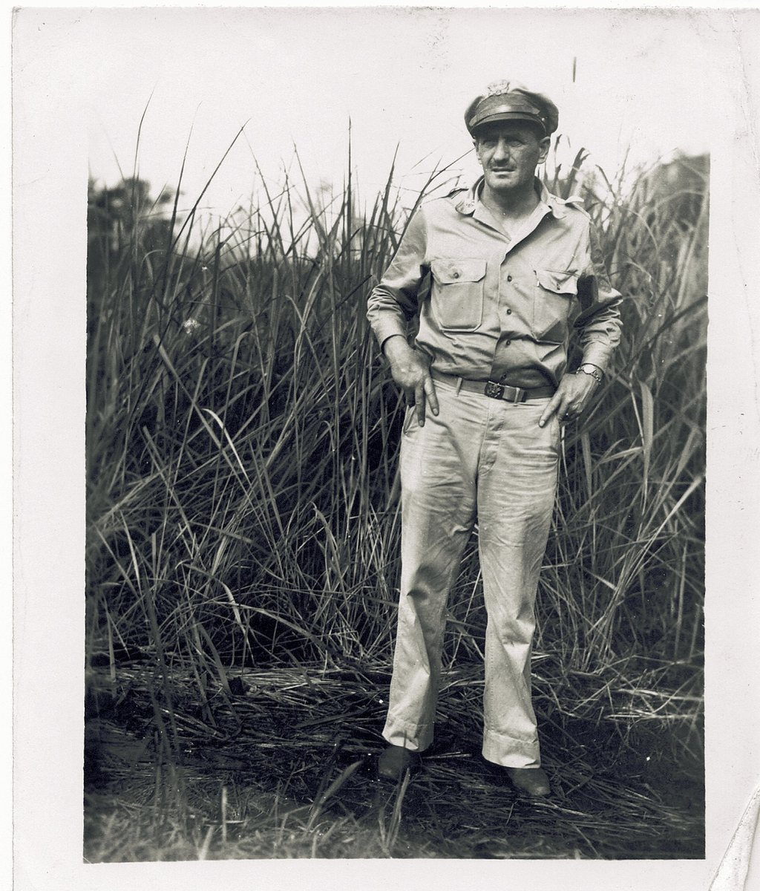
Identified by the family as Maj. — later Col. — Paul Irvin “Pappy” Gunn, photographed by Allen in the kunai grass. Gunn was the officer behind the gun packs in the nose of Allen’s squadron’s B-25s.
What He Brought Home
The front page of the Allied forces’ field newspaper “GUINEA GOLD”, the masthead marked “NORTHERN EDITION (AMERICAN)” and the line beneath it reading “Vol. 2. No. 96.”, “In the Field, Tuesday, February 22, 1944” and “NOT FOR SAL...” where the sheet is trimmed. The lead headline runs “19 Enemy Ships Sunk, 201 Planes Destroyed In First Two Days Of Assault On Truk”, with side columns headed “Jap Army & Navy Chiefs Sacked”, “Mighty Allies For ‘Return To Tokio’” and “STOP PRESS”, a second banner on Anzio, and a single halftone photograph captioned “DEATH SCENE”.
A single sheet of hand-brushed Japanese text in vertical columns of kanji and katakana, read right to left, headed 皇軍將兵ニ告グ — an address to the officers and men of the Imperial Army. The body invokes the 戰陣訓 field-service code and argues that with rations gone, the men worn down in the jungle and the high command’s plans miscarried, there is no shame in surrender — 降ルモ恥ナシ — and that to remain is only 徒死, death in vain; it is an appeal urging Japanese troops to give themselves up rather than a personal letter, and it bears no signature, seal or unit mark to show who wrote it.
A printed “Marriage Certificate”, folded and worn at the edges, recording that on the “Tenth” day of “October” “one thousand nine hundred and fourteen”, at “the Parsonage, Cressona, Pa.”, “Earl J. Sweigert” and “Helen R. Fessler” were married under a licence issued by the Clerk of the Orphans’ Court of Schuylkill County, Pennsylvania. It is signed “J. Arthur Schaeffer”, “Minister of the Gospel”, and numbered “Vol. 26”, “No. 478”.
A photograph of a printed wartime cartoon in two panels: above, a man in a checked jacket leans over a woman lying in bed beside a curtain patterned with stars and stripes; below, figures crawl through broad-leaved jungle undergrowth past a cooking pot, one of them in an Australian slouch hat. The printed caption reads “THAT GOES DOUBLE” over “The Slick Yank (in Melbourne): / Take your sweet time at the front, Aussie— / I got my hands full right now— / with your sweet toots... at home—“.
An itemised bill on the letterhead of “BITTLE BROS.”, “DEALERS IN” “FURNITURE - CARPETS - RUGS” of “SCHUYLKILL HAVEN, PA.”, dated “April 22” “1915” to “Mr Earl J. Sweigert”. The hand-written list runs from a “Brass Bed” at 38.00 through dresser, “Chiff”, parlor table, couch, rocker, mattress, “Costumer”, spring and “5 yds Rug Filler”, totalling “158.50” before a deduction marked “Less 10 %”.
Japanese Government occupation banknote for Oceania, the obverse of the one-shilling note, printed in blue-grey with a breadfruit branch and numeral “1” at left and a palm-fringed shore at right, lettered “THE JAPANESE GOVERNMENT” and “ONE SHILLING”; a red “OC” block overprint appears twice across the top, and the Japanese line along the bottom edge reads “Government of the Empire of Great Japan”.
The English side of the same Allied safe-conduct leaflet, printed “The bearer of this pass is voluntarily surrendering and should be treated with courtesy, and conducted to the nearest Commanding Officer for transfer to a rear area.” and signed “Commander-in-Chief, Allied Forces.”, with a column of seven stars down the left margin and Japanese vertical panels at right and lower left; this is word for word the text Allen reads aloud on camera.
The illustrated face of a Tok Pisin leaflet, printed in colour in two panels: above, villagers in laplaps walking toward a large transport aeroplane marked with a white American star, one man carrying a bow; below, eight men paddling an outrigger canoe along a wooded shore. The lettering between them reads “GUVMENT BELOG YUMI / I REDI IM PLANTI KAIKAI / NAU SELIM NATING” — our government has plenty of food ready and is giving it out for nothing.
A newspaper clipping he kept: an aerial photograph in which pale parachutes hang scattered over scrub and open ground, with the printed caption “BOMBS BY PARACHUTE: Parachute-borne bombs are being used extensively against the Japanese in New Guinea. In this picture they are shown “blossoming” along the dispersal area adjoining the But airfield (Wewak area) during an attack by American B-25s.” A second headline, “BATTLE OF THE SKIES”, is cut off at the bottom edge.
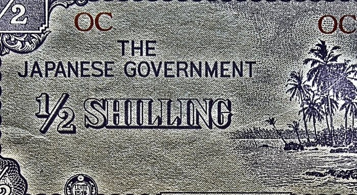
A tight crop of one side of the Japanese Government occupation half-shilling note for Oceania, showing “THE JAPANESE GOVERNMENT” over “1/2 SHILLING”, palms and a shoreline at right, the corner fraction “1/2” clipped by the crop at upper left, and the red “OC” overprint twice along the top.
The Japanese-language side of an Allied safe-conduct leaflet, in two panels inside a red printed frame with a decorative border of small artillery-piece devices: the heading is the idiom for being hemmed in on every side with no way out, and the body below tells the reader to give up dying a dog’s death, to live and serve the Japan that is to come, and to bring the leaflet and come over one man at a time, by night or day, the Allied forces will treat him well.
A leaflet printed in Tok Pisin beneath the Australian coat of arms, headed “OL BOI BILONG KIAP BILONG BIK NUKINI / LUKAUT.” and continuing “MIPALA KARIM PAIT LONG HAP BILONG YUPALA NAU. RAUSIM MERI NAU PIKININI LONG PLES. NAU HAIT LONG BUS. NOGUT BOM IKILIM OL ONTAIM JAPAN. YUPELA MAN WAITIM TOK BILONG POLISBOI NAU SOLDIA BILONG MIPALA.” and closing “TOK BILONG GAVMAN.” — a warning that the fighting is coming to the reader’s area, to take the women and children out of the village and hide in the bush, and to wait for word from the government’s police and soldiers; “P10” is pencilled at the upper right.
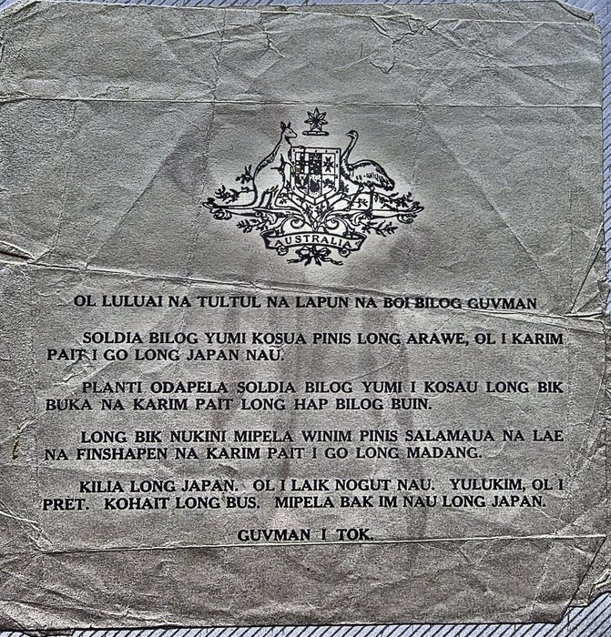
The printed reverse of the same Tok Pisin leaflet, a single creased and much-folded sheet headed by the Australian coat of arms on a scroll lettered “AUSTRALIA”. The text opens “OL LULUAI NA TULTUL NA LAPUN NA BOI BILOG GUVMAN”, tells of the fighting at Arawe and past Salamaua, Lae, Finschhafen and Madang, and closes “GUVMAN I TOK.”
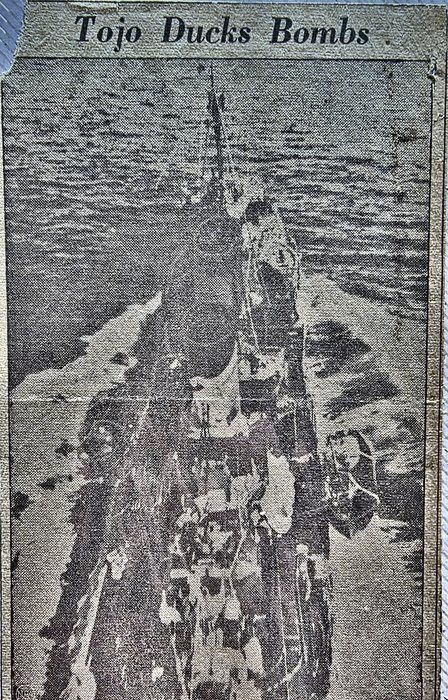
A newspaper clipping he kept, headed “Tojo Ducks Bombs”. Beneath it is a coarse-screen press photograph, taken from the air almost directly overhead: what appears to be a ship under way on open water, its wake spreading astern, with dark patches in the sea to either side. The newsprint dots are heavy and no marking or name can be read.
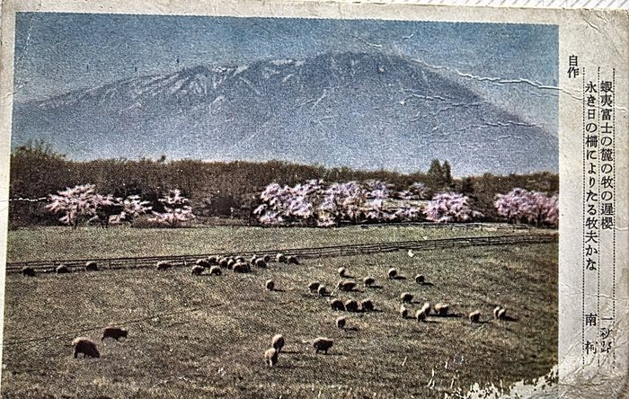
A Japanese picture postcard from Allen’s collection: sheep grazing in a fenced pasture below a broad, snow-streaked volcano, with cherry trees in blossom along the treeline behind them. The printed verse down the right-hand side begins “蝦夷富士の麓の牧の遅桜” — late cherry blossom at a pasture at the foot of Ezo-Fuji — and is marked “自作”, the writer’s own composition.
Memorial Day, Cressona, 2006
Photographed by Jeremy in the summer of 2006 — the same season as the interview — at the service of American Legion Post 286, of which Allen was a sixty-year member and a past commander.
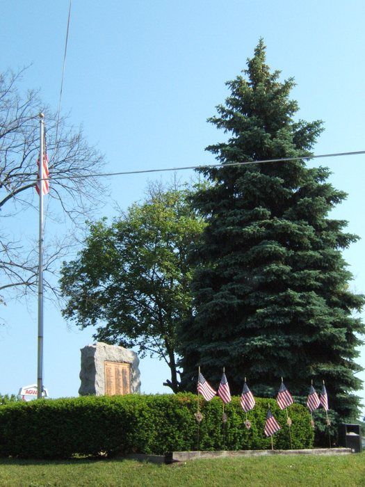
A village war memorial: a rough granite boulder set with a bronze tablet of names, and small United States flags in bronze grave-marker holders ranked along the hedge in front. The flag on the pole beside it hangs slack at the top of the staff in still air; overhead power lines cross the frame, and a red commercial sign behind the shrubbery is only partly readable, as “AGW...”.
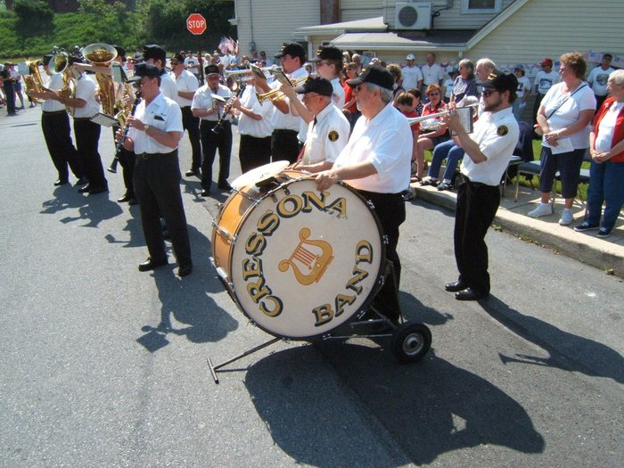
The same band from closer in, the “CRESSONA BAND” bass drum riding on its wheeled carriage as the drummer plays. A “STOP” sign marks the corner and the sign on the building behind is only partly readable, as “...RILL”.
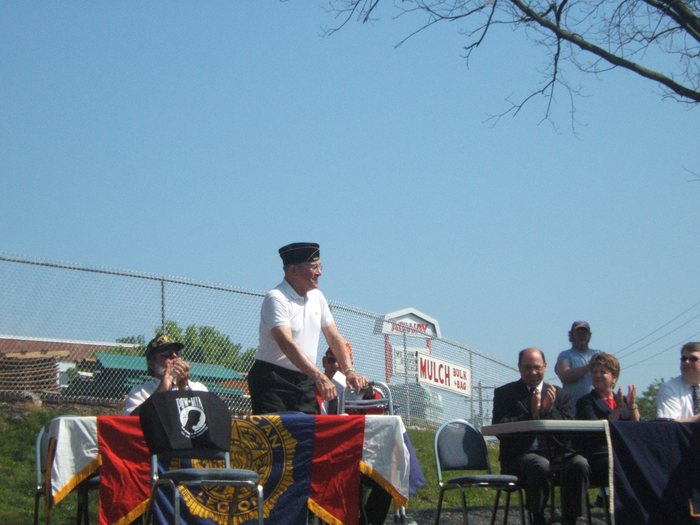
Allen, in an American Legion garrison cap and white polo shirt, stands behind the emblem-draped table with his hand on his walking frame, mouth open in a laugh, while those seated around him applaud; a POW-MIA cloth hangs over the chair beside him. A commercial sign beyond the chain-link fence reads “MULCH BULK + BAG”.
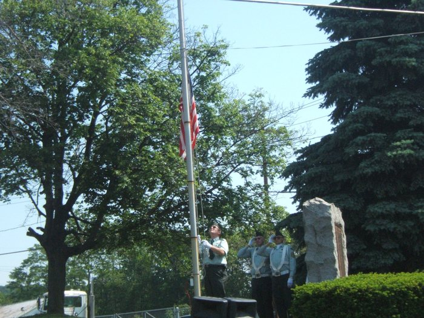
A man in a light uniform shirt and sunglasses works the halyard with the flag hanging partway up the pole, while two colour-guard members in pale blue shirts, white belts and white gloves stand at the salute. A rough-cut granite memorial stone stands at right against the evergreens.
Allen with both his sons, shoulder to shoulder beside a corrugated-metal building — John Sweigert at the left, Allen in the centre, Allen Sweigert, Jr. at the right. His cap is lettered “286” and “PENN...” and seated with a chair or wheeled walker behind him. The man at left has a red crepe poppy pinned to his shirt, and furled parade banners on staffs stand against the wall behind, the red one partly readable as “...ROOP 130”.
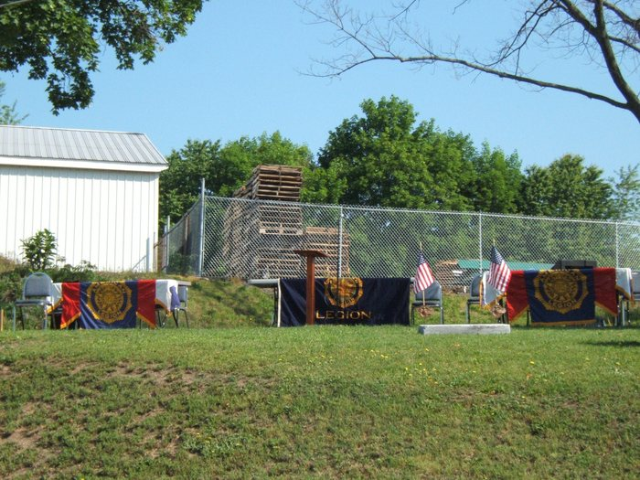
Folding chairs and three banner-draped tables stand ready on the grass before a service begins, the centre drape carrying the American Legion emblem and the word “LEGION”, with a plain wooden lectern beside it. Two small United States flags in bronze grave-marker holders and a low white marker stone are set out at right, with a metal-sided building, a chain-link fence and stacked wooden pallets behind.
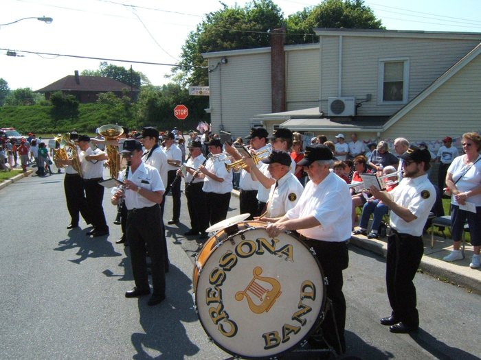
A community band plays in the street, the bass drum lettered “CRESSONA BAND” around a gold lyre; some twenty musicians in white shirts, black trousers and dark caps work through clarinets, trumpets, saxophones and a tuba. Spectators line the kerb, a “STOP” sign stands at the corner, and a small sign on the building behind reads “AMERICAN LEGION”.
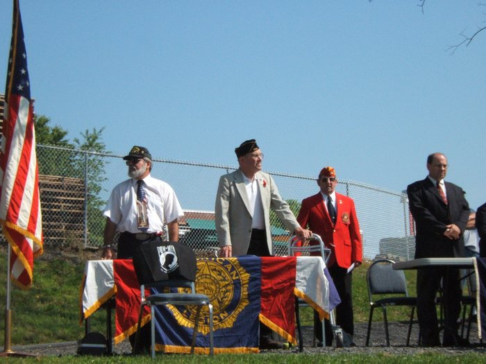
Four men stand behind a table draped with the American Legion emblem banner. Allen is second from the left, in a garrison cap and tan jacket with his hand on his walking frame and a red crepe poppy at his lapel; at the end of the row, one in a garrison cap, white shirt and dark tie, one in a red blazer and cap, and one in a dark suit. A black POW-MIA cloth is laid over the chair in front, and a United States flag on a stand rises at left.
A wide view of the service: a man in a garrison cap stands at the lectern in front of a table draped with the word “LEGION”, with about a dozen people ranged behind banner-draped tables, four of them saluting and one in desert-pattern camouflage. A United States flag stands unattended in a floor stand at left and furled flags on planted poles at right; a white marker stone with two small flags sits on the grass, and timber steps climb through the foreground.
A Card That Is Not From the War
Kept with the wartime papers, but twenty years younger than they are.
The front of card 34 of Topps’ “Battle” set, issued in 1965 — twenty years after the war, not during it: a painted jungle scene captioned “SAVING HIS BUDDIES” in a yellow banner at the top right. At the left a man plunges head-first from a tree, hands reaching down; at the centre a soldier in a peaked field cap marked with a red disc, a red sunburst on his sleeve, holds a bolt-action rifle across him; and at the right a bareheaded man and a man in a steel helmet sit propped together, with a further bandaged arm running off the right edge of the crop.

![The front page of the Allied forces' field newspaper "GUINEA GOLD", the masthead marked "NORTHERN EDITION (AMERICAN)" and the line beneath it reading "Vol. 2. No. 96.", "In the Field, Tuesday, February 22, 1944" and "NOT FOR SAL..." where the sheet is trimmed. The lead headline runs "19 Enemy Ships Sunk, 201 Planes Destroyed In First Two Days Of Assault On Truk", with side columns headed "Jap Army & Navy Chiefs Sacked", "Mighty Allies For 'Return To Tokio'" and "STOP PRESS", a second banner on Anzio, and a single halftone photograph captioned "DEATH SCENE".](images/thumb/guinea-gold-pg1-e805dde0.jpg)
![A single sheet of hand-brushed Japanese text in vertical columns of kanji and katakana, read right to left, headed 皇軍將兵ニ告グ -- an address to the officers and men of the Imperial Army. The body invokes the 戰陣訓 field-service code and argues that with rations gone, the men worn down in the jungle and the high command's plans miscarried, there is no shame in surrender -- 降ルモ恥ナシ -- and that to remain is only 徒死, death in vain; it is an appeal urging Japanese troops to give themselves up rather than a personal letter, and it bears no signature, seal or unit mark to show who wrote it.](images/thumb/japaneese-letter-not-sure-8393a715.jpg)


![A leaflet printed in Tok Pisin beneath the Australian coat of arms, headed "OL BOI BILONG KIAP BILONG BIK NUKINI / LUKAUT." and continuing "MIPALA KARIM PAIT LONG HAP BILONG YUPALA NAU. RAUSIM MERI NAU PIKININI LONG PLES. NAU HAIT LONG BUS. NOGUT BOM IKILIM OL ONTAIM JAPAN. YUPELA MAN WAITIM TOK BILONG POLISBOI NAU SOLDIA BILONG MIPALA." and closing "TOK BILONG GAVMAN." -- a warning that the fighting is coming to the reader's area, to take the women and children out of the village and hide in the bush, and to wait for word from the government's police and soldiers; "P10" is pencilled at the upper right.](images/thumb/pap-20260924-051105-d0245ee7.jpg)


![The front of card 34 of Topps’ “Battle” set, issued in 1965 — twenty years after the war, not during it: a painted jungle scene captioned "SAVING HIS BUDDIES" in a yellow banner at the top right. At the left a man plunges head-first from a tree, hands reaching down; at the centre a soldier in a peaked field cap marked with a red disc, a red sunburst on his sleeve, holds a bolt-action rifle across him; and at the right a bareheaded man and a man in a steel helmet sit propped together, with a further bandaged arm running off the right edge of the crop.](images/disp/pap-20260924-051151-c0754d9e.jpg)